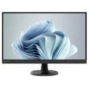

Welcome to ShopperINF!
Only our best products!
| Desktop computers | Laptops | Monitors | Keyboard and mouse |
|---|---|---|---|
 |
 |
 |  |
Did you missclick? Go back instead!
Desktop computers
| Images | Information | |
|---|---|---|
|
Name: | Ordenador Sobremesa PcCom Ready AMD Ryzen 7 5800X / 32GB / 1TB SSD / RTX 5060 + Windows 11 Home |
| Price: | 1159€ | |
| Brand: | PcCom | |
| Description | Excelente relación calidad/precio para este PC con componentes de primeras marcas, la máxima garantía y gran rendimiento, ideal para usuarios que buscan hacer "de todo un poco". | |
 |
Name: | Ordenador Sobremesa PcCom Work Intel Core i7-12700 / 32GB / 2TB SSD + Windows 11 Pro |
| Price: | 869€ | |
| Brand: | PcCom | |
| Description | Pensado para un uso general en el hogar o en la oficina, el PcCom Work se presenta como un potente equipo en el que su procesador Intel Core i7, sus 32GB de RAM DDR4 y el rápido disco SSD de 2TB NVMe permiten trabajar de forma holgada en muy diferentes tareas, lo que lo hace ideal para entornos domésticos o de oficina. | |
Back to top
Laptops
| Images | Information | |
|---|---|---|
|
Name: | Portátil PcCom Revolt 5070 Intel Core i7-14650HX 16"/QHD /32GB/1TB/Windows |
| Price: | 1589€ | |
| Brand: | PcCom | |
| Description | Vive el gaming como nunca con el nuevo PcCom Revolt 5070 16". Potencia, velocidad y una experiencia visual envolvente se combinan en un portátil diseñado para llevar tu juego al siguiente nivel. Con un diseño moderno, teclado retroiluminado y sonido impactante, es el aliado perfecto para quienes exigen más. Su pantalla QHD de 16" ofrece una calidad de imagen espectacular, con gran nitidez y colores vibrantes que te sumergen de lleno en cada partida. Déjate llevar por cada encuentro con fluidez, precisión y estilo.". | |
 |
Name: | Portátil Lenovo IdeaPad Slim 3 15ABR8 AMD Ryzen 5 5625U/16GB/512GB SSD/15.6" |
| Price: | 109€ | |
| Brand: | Lenovo | |
| Description | Rinde al máximo cada día con el Lenovo IdeaPad Slim 3 15ABR8, un portátil ligero y potente, pensado para expertos que exigen agilidad, fiabilidad y gran autonomía en cualquier entorno. | |
Back to top
Monitors
| Images | Information | |
|---|---|---|
| Name: | Lenovo D27-40 27" LED FullHD 75Hz FreeSync | |
| Price: | 129€ | |
| Brand: | Lenovo | |
| Description | El monitor Lenovo D27-40 es un sorprendente monitor de oficina para el hogar que puede funcionar como equipo para juegos y entretenimiento. Obtenga una vista amplia de sus documentos de trabajo, series web favoritas y juegos adictivos con el panel NearEdgeless VA más grande de 27 pulgadas y 3 lados. Sin importar desde donde mire la pantalla, verá imágenes consistentes sin colores desteñidos, gracias al ángulo amplio de visualización de 178°/178°. | |
 |
Name: | PcCom Monitor Gaming 27" VA FHD 180Hz Adaptive Sync Curva |
| Price: | 114€ | |
| Brand: | PcCom | |
| Description | El monitor PcCom Elysium Go es una excelente elección para los apasionados de los videojuegos que buscan una experiencia de visualización inmersiva y de alto rendimiento. | |
Back to top
Keyboard and mouse
| Images | Information | |
|---|---|---|
|
Name: | HP Pavilion Wired Combo Keyboard 400 Teclado Rato (PT) |
| Price: | 46€ | |
| Brand: | HP | |
| Description | Mejora la forma en que trabajas y juegas gracias a un teclado y a un ratón que se integran a la perfección con tus dispositivos. Estos accesorios de diseño elegante han sido ideados para la productividad y el confort, ayudándote a lograr nuevas cotas de eficacia. | |
 |
Name: | FR-TEC Dragon Ball Super Keyboard GOKU Teclado Mecánico Gaming TKL Switch Blue |
| Price: | 50 | |
| Brand: | FR-TEC | |
| Description | Teclado mecánico con switch azul, "click" diseñado para durar y asegurar la respuesta del teclado. | |
 |
Name: | Razer Deathadder Essential Ratón Gaming 6400 DPI Negro |
| Price: | 20€ | |
| Brand: | Razer | |
| Description | Durante más de una década, la línea razer deathadder ha sido un pilar en el ámbito mundial de los deportes electrónicos. Se ha ganado una reputación de confiabilidad que los jugadores juran debido a su durabilidad y ergonomía probadas. Ahora, lo estamos haciendo aún más accesible con su último sucesor: el razer deathadder essential. | |
Back to top